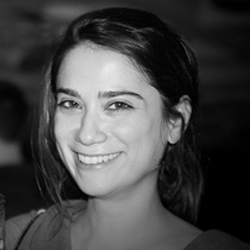
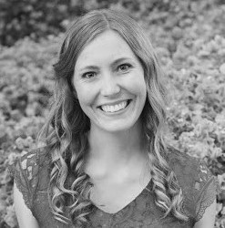
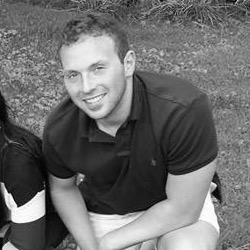
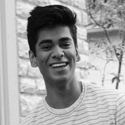
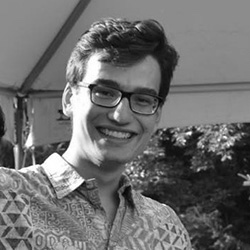
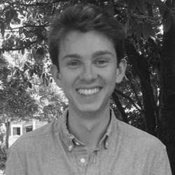

Zeynep Saygin, Ph.D.
P.I., Assistant Professor of Psychology
Ph.D., Systems Neuroscience, Massachusetts Institute of Technology (MIT)
B.Sc., Neuroscience, Brown University
Email: saygin dot 3 at osu dot edu
CV

Heather Hansen
Graduate Student
B.S., Psychobiology, UCLA
Bio: I am interested in attention and cognitive control, specifically how we focus on relevant stimuli and ignore irrelevant stimuli. I am particularly interested in studying individuals with Misophonia, a condition characterized by over-sensitivity and increased attention to certain environmental noises. I am working with Dr. Saygin to explore this condition from a neuroimaging standpoint, such as through connectivity patterns, structural differences, and developmental origins.
Email: hansen dot 508 at osu dot edu

Micah Rhodes
Lab Manager
B.A., Psychology, DePauw University
Bio: After graduating this past May, I'm very excited to be working with Dr. Saygin in her new lab.
Currently, I'm very interested in the effects of traumatic brain injury (TBI) on the brain. In the near future, I hope to attend graduate school in either cognitive neuroscience or clinical psychology.
Email: rhodes dot 424 at osu dot edu

Eshwar Madishetti
Undergraduate Research Assistant
Neuroscience Major, Ohio State
Bio: I am a first-year undergraduate student majoring in Neuroscience and minoring in Philosophy at OSU.
I'm looking forward to working with Dr. Saygin and her associates, and I'm excited to be gaining knowledgable experience in the Z-lab!
Right now, I'm interested in the effects of auditory stimuli on the brain. After graduating I hope to attend medical school and become a psychiatrist.
Email: madishetti dot 1 at osu dot edu

Justin Flanagan
Undergraduate Research Assistant
Neuroscience Major, Ohio State
Bio: As a third year undergraduate student here at Ohio State, I am well on my way to earning a degree in
cognitive and computational neuroscience with a minor in philosophy. I hope to achieve a graduate degree in neuroscience
as well, and I am predominantly interested in how developmental changes in the brain are related to mental disorders such
as depression and schizophrenia. Development is a key aspect of Dr. Saygin’s research, and I hope to continue building
my knowledge on the subject as a research assistant in her lab.
Email: flanagan dot 196 at osu dot edu

Carver Nabb
Undergraduate Research Assistant
Neuroscience Major, Ohio State
Bio: I am a fourth-year neuroscience student hoping to attend graduate school in the coming years to further study the field.
With neuroscience being one of the fastest growing domains of science today, I am extremely excited to have the opportunity
to work with Dr. Saygin and the rest of the team to not only expand my own knowledge of neuroscience, but the general public's as well.
Email: nab dot 2 at osu dot edu